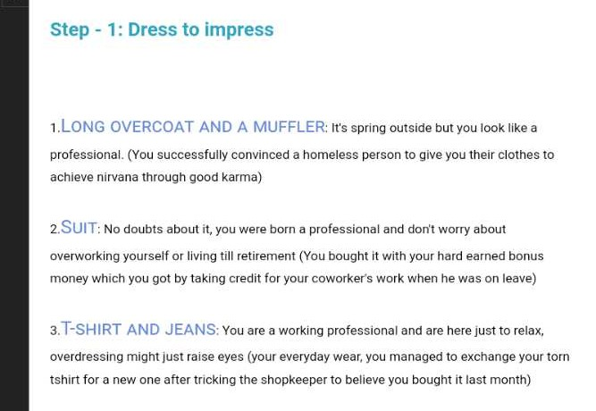
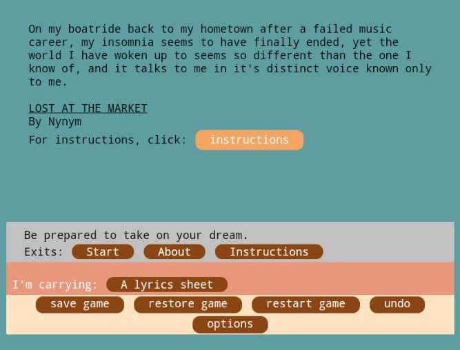
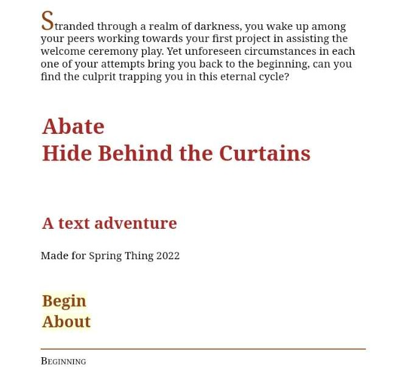
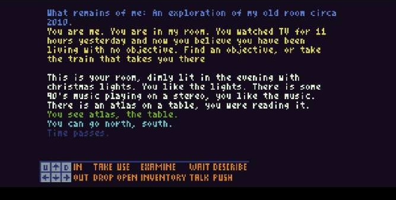
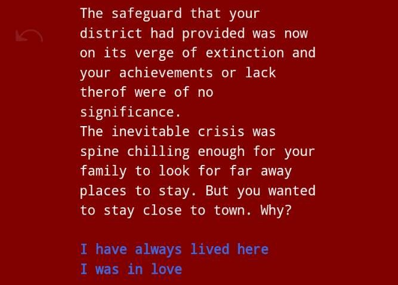
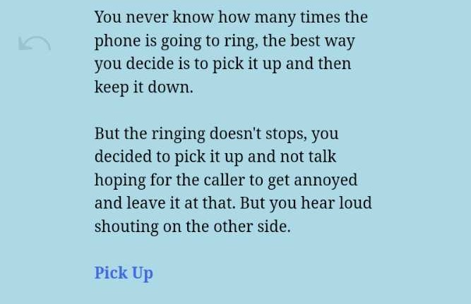

Get ready to embark on a quirky adventure as you strive to impress an omniscient cactus 🌵, a wall, and a really cool donkey. It's all about aesthetics in this whimsical journey!
Play here

Dive into a fever dream as you return to your hometown after a failed music career. Explore the surreal landscape and uncover the mysteries that await in this captivating adventure.

Peek behind the curtains in this intriguing strand type game made in JavaScript using the Ramus framework and Sugarcube-2. Explore the narrative layers compiled with tweego for a unique gaming experience.

Immerse yourself in a neo-noir comedy set in the creator's old neighborhood. Navigate through the story with a blend of parser gameplay and retro GUI elements using TIC80. Discover what mysteries lie hidden in the shadows.
Play here, for touch screens play here

Step into the shoes of an intergalactic communicator in this intense drama. Navigate through complex conversations and uncover the truth hidden within the vast reaches of space.
Experience the harsh realities of a post-apocalyptic world in this survival demo. Adapt to the challenges of the environment and forge your path towards a new dawn.

Take on the role of a millionaire in this simulation game. Manage your wealth, make strategic decisions, and navigate the challenges of high society in your quest for success.
